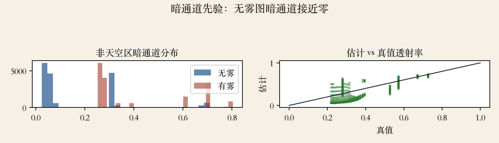
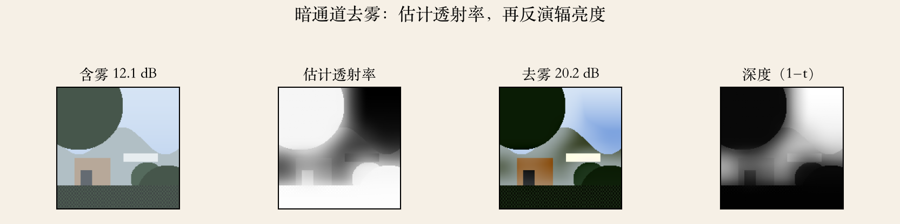
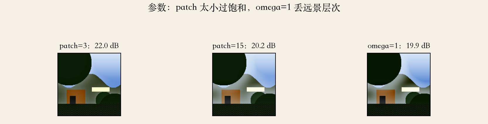

来源 · He et al. 2011
去雾：先估雾有多厚
原书是 He、Sun、Tang 的 TPAMI 2011 论文。
第 2341 页：暗通道先验，从单张图去雾。
观察：无雾图的局部块里，至少一个通道很暗。
雾让对比度下降、颜色发灰、远处细节消失。
依据：原书第 2341 页（He et al. 2011）
四块内容
大气散射模型
暗通道估透射率
估大气光、恢复、调参
失效边界
正课第八十九集
01 / 12
物理模型 · 大气散射
物理模型：J·t + A(1−t)
第 2342 页：观测 I 等于 J 乘 t 加大气光 A 乘 1 减 t。
t 是未被散射、到达相机的那部分光。
t 接近 1 雾薄，t 接近 0 雾厚。
三个未知数、一个方程；论文说 3N 个方程、4N+3 个未知数。
依据：原书第 2342 页
符号
I：观测图
J：场景辐亮度
t：透射率
A：大气光
正课第八十九集
02 / 12
暗通道 · 先验
看图：无雾图暗通道接近零
第 2343 页：非天空局部块里，至少一个通道接近零。
暗通道：先取三通道最小值，再在块里取最小。
阴影、深色树叶、彩色物体、暗窗户都满足，天空是例外。
块小先验易破，块大透射率常数假设变粗。
依据：原书第 2343 页；本集实验

暗通道先验：无雾/有雾暗通道分布；估计 vs 真值透射率 r=0.871｜程序生成，未用教材或论文原图
正课第八十九集
03 / 12
透射率 · 归一化
透射率：1 减归一化暗通道
第 2344 页：两边除以 A，再取暗通道。
无雾图的暗通道接近零，于是 t 由 1 减暗通道估出。
某块越接近大气光，雾越厚、t 越小。
乘 omega 留一点雾，避免远景太假。
依据：原书第 2344 页
三个量
A：先估出来
omega：0 到 1
t：1 减 omega 乘暗通道
正课第八十九集
04 / 12
天空 · omega
天空与 omega
第 2345 页：可选地保留少量雾给远景。
天空颜色接近大气光，公式给出接近零的 t。
omega 等于 1 去得最狠，小于 1 保留空气感。
omega 取 0.95 是论文常用值；天空 t 接近 0 靠 t0 兜底。
依据：原书第 2345 页
omega 的作用
等于 1：去雾最狠
小于 1：保留空气感
天空不用单独分割
正课第八十九集
05 / 12
大气光 · 0.1%
大气光：最雾的 0.1%
第 2347 页：取暗通道最亮的 0.1% 像素。
这些通常是最雾的区域。
再在这些像素里选输入图强度最高的，作为 A。
不直接取全图最亮：白车、白墙可能比天空还亮。
依据：原书第 2347 页
估 A 的步骤
暗通道最亮 0.1%
其中取输入图最亮
A 取 RGB 三个数
正课第八十九集
06 / 12
细化 · 软抠图
看图：透射率与反演
第 2345–2346 页：块内 t 常数会带来光晕和块状伪影。
把 t 当 alpha 图，用软抠图细化。
工程上常用引导滤波做 O(N) 近似。
细化只改 t，不改 A；A 错了救不回来。
依据：原书第 2345–2346 页；本集实验

暗通道去雾：含雾 12.05 dB→去雾 20.21 dB；透射率/深度｜程序生成，未用教材或论文原图
正课第八十九集
07 / 12
恢复 · t0
恢复：除以 max(t, t0)
第 2348 页：J 等于 I 减 A，除以 max(t, t0)，再加 A。
t0 的典型值是 0.1。
t 很小时直接除会放大噪声，所以要设下限。
恢复后通常偏暗，显示时要再提曝光。
依据：原书第 2348 页
t0 的取舍
太大：雾去不干净
太小：噪声爆炸
0.1：保留 10% 的雾
正课第八十九集
08 / 12
参数 · patch
看图：参数不是通吃
第 2348 页：patch 越大，块内出现暗像素的概率越高。
patch 太大，透射率常数假设越粗。
patch 太小会过饱和，太大会混进不同深度。
omega、t0、patch 要一起调；patch 一般取 15 左右。
依据：原书第 2348 页；本集实验

参数：patch=3 22.02 vs patch=15 20.21；omega=1 19.90 dB｜程序生成，未用教材或论文原图
正课第八十九集
09 / 12
失效边界 · 天空与白色物体
失效：天空与白色物体
第 2343 页：暗通道先验对天空不是好先验。
第 2347 页：白色物体、白墙、白车也不满足先验。
t 会被估低，恢复过度。
要检测这些区域、调 A，或让学习式方法兜底。
依据：原书第 2343/2347 页
怎么兜底
天空：颜色或位置检测
白物体：过曝、低饱和检测
学习式：可能编造纹理
正课第八十九集
10 / 12
实验 · 合成雾
实验：机制，不是排名
含雾 12.05 dB，去雾 20.21 dB；原始 t 18.91 dB。
大气光误差 1.15%，透射率相关 0.871，深度相关 0.764。
patch=3 的 22.02 比 patch=15 的 20.21 高，但过饱和，差 1.81 dB。
omega=1 降到 19.90 dB；白屋顶误差 0.162，其他区域 0.073。
依据：本集实验
读数
含雾 12.05 → 去雾 20.21 dB
t 相关 0.871 / 深度 0.764
白屋顶误差 0.162
正课第八十九集
11 / 12
收束 · 下一集修补
总结：模型、t 与边界
去雾等于大气散射模型加暗通道先验。
t 估得准不准，决定去雾干不干净。
暗通道怕天空和白色物体，参数要按图调。
下一集讲图像修补：已知缺失区域怎么补。
依据：原书第 2341–2348 页；本集实验
三件事
大气散射模型
暗通道估 t
天空和白物体是边界
正课第八十九集
12 / 12